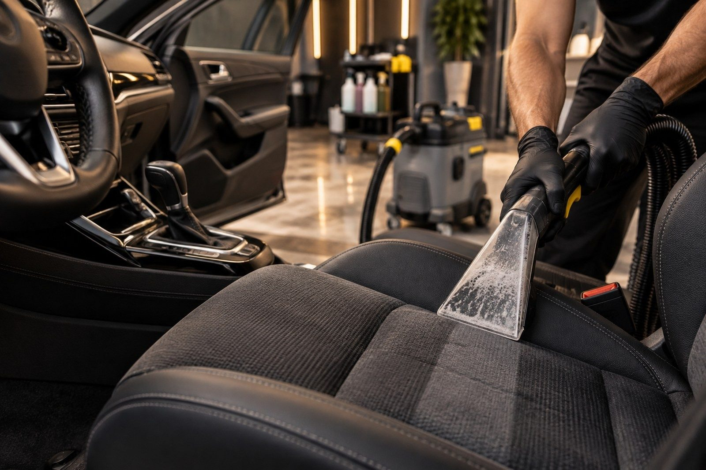
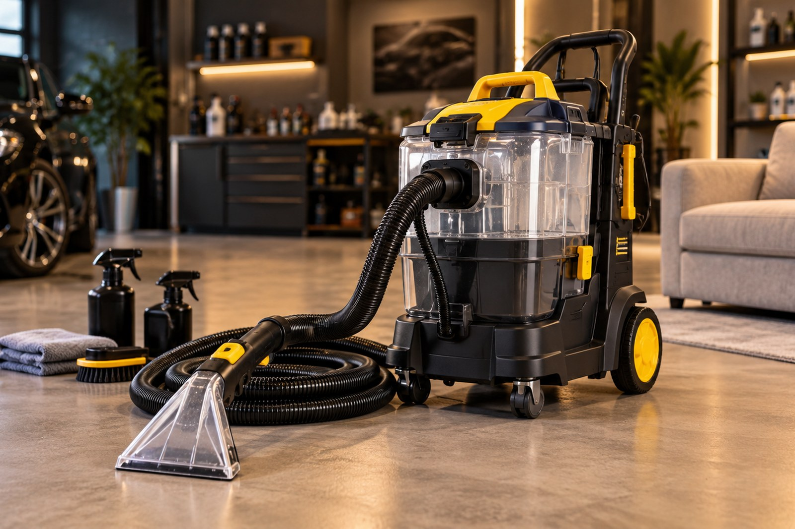

Jedna firma, tri praktične usluge.
Dubinski Sjaj je zamišljen kao lokalna firma koja klijentima nudi profesionalno pranje vozila i nameštaja, ali i jednostavnu opciju iznajmljivanja opreme.


Jednostavan pristup poslu
Fokus je na jasnom dogovoru, pravilnoj pripremi površine i radu sa opremom namenjenom ekstrakcionom čišćenju. Bez komplikovanih paketa i nejasnih uslova.
- Pre dogovora proveravamo vrstu i stanje površine.
- Klijent unapred dobija okvirnu cenu i vreme trajanja.
- Kod iznajmljivanja dobija kratko uputstvo za bezbedan rad.
Najčešća pitanja
Vreme zavisi od veličine vozila i stanja enterijera. Za standardni putnički automobil okvirno se planira nekoliko sati rada i dodatno vreme sušenja.
Ne. Posle ekstrakcionog pranja površini je potrebno vreme da se potpuno osuši. Tačno vreme zavisi od materijala, ventilacije i temperature prostora.
Dobijate mašinu, osnovno uputstvo za rad i objašnjenje pravilnog postupka pranja i vraćanja opreme.
Kako izgleda ekstrakciono pranje
Primer postupka je prikazan u ugrađenom YouTube video zapisu, kao dodatni multimedijalni sadržaj.
Treba vam procena cene?
Pošaljite kratak opis i odgovorićemo sa predlogom usluge.